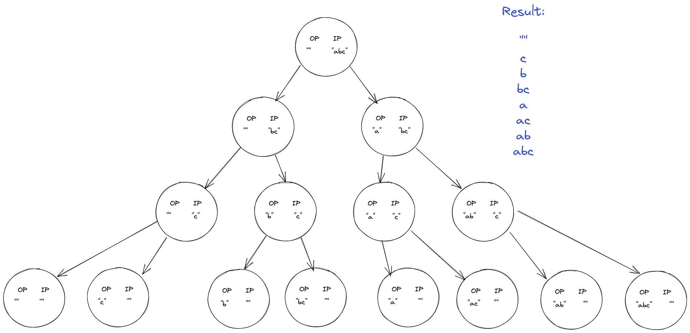

Recursion
Table of Contents
Introduction
Input reduction in consequence of decision making
- Making the problem input small is not the goal.
- Take decisions that make the given input small.
Identify Recursion problems
- These problems require you to make choices/decisions.
Recursive Tree
- IP-OP method: create root node with given input set and an initial output set. Number of branches denote number of possible choices from the node. See the example problem below for more details.
Example: Given string
"abs". Represent all its subsets
Approaches to solve Recursion problems
- Recursive tree
- Base condition - Induction - hypothesis
- Choice Diagram
Recursion Problems
Hypothesis - Induction - Base approach
- Assume that the function exists and test it with smaller inputs.
- Induce the work required to make the function work for the rest of the input.
- Figure out base condition.
Example: Sort an array using recursion
Assume sort(v) sorts a vector v;
sort({5, 1, 0, 2})->{0, 1, 2, 5};For smaller input v[begin, end - 1):
sort({5, 1, 0})->{0, 1, 5};- Induction:
reduce the vector size -> sort the smaller vector -> find the right place (new recursion problem) for the last element - Base condition:
return if v.size() == 1
Print 1 to n (and n to 1) and factorial
#include <iostream> /// printTill(7) -> 1 - 7 /// printTill(6) -> 1 - 6 (7) void printTill(int n) { // base condition if (n == 0) return; // hypothesis printTill(n - 1); // induction std::cout << n << " "; } // fact(n) -> n * n - 1 * n - 2 * ... * 1 // fact(n - 1) -> n - 1 * n - 2 * ... * 1 int fact(int n) { // base cond if (n == 1) return 1; // induction hypothesis return n * fact(n - 1); } /// printReverse(7) -> 7 - 1 /// printReverse(6) -> (7) 6 - 1 void printReverse(int n) { // base cond if (n == 0) return; // induction std::cout << n << " "; // hypothesis printReverse(n - 1); } int main() { std::cout << "1 to n: "; printTill(7); std::cout << std::endl; std::cout << "n to 1: "; printReverse(7); std::cout << std::endl; std::cout << "fact(4): "; std::cout << fact(4) << std::endl; }
1 to n: 1 2 3 4 5 6 7 n to 1: 7 6 5 4 3 2 1 fact(4): 24
Sort an array
#include <iostream> #include <algorithm> #include <vector> using std::vector; void insert(vector<int> &v, int temp) { // base cond if (v.size() == 0 || v[v.size() - 1] <= temp) { v.push_back(temp); return; } // hypothesis int max = v[v.size() - 1]; v.pop_back(); insert(v, temp); // induction v.push_back(max); } void sort(vector<int> &v) { // base cond if (v.size() == 1) return; // hypothesis auto temp = v[v.size() - 1]; v.pop_back(); sort(v); // induction insert(v, temp); } int main() { vector v = {2, 9, 1, 0, 7, 10, -20}; sort(v); std::for_each(v.begin(), v.end(), [](auto &el){ std::cout << el << " "; }); std::cout << std::endl; }
-20 0 1 2 7 9 10
TODO Delete middle element of stack
TODO Reverse a stack
TODO Remove duplicate element from string
TODO Count the number of occurences
IP-OP approach
The approach is already described above.
Subsets
- substring: Continuous. "abc" ->
a b ab bc abc(notac) - subsequence: non contiunuous but ordered. "abc" ->
ac(notca). A substring is a subsequence. - subset: non continuous and unordered. A subsequence is a subset.
- powerset: All subsets of a set. "ab" ->
a b ab ""
#include <iostream> #include <string> using std::string; void print_subsets(string &op, string in) { if (in.size() == 0) { std::cout << op << std::endl; return; } auto t = in[0]; auto op1 = op, op2 = op; op2.push_back(t); in.erase(in.begin()); print_subsets(op1, in); print_subsets(op2, in); } int main() { string in = "abc"; string init = ""; print_subsets(init, in); }
c b bc a ac ab abc